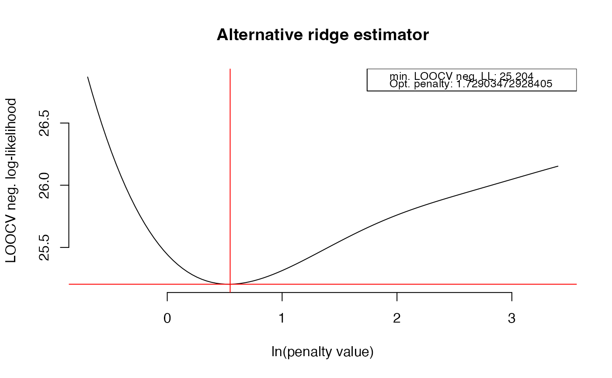

Select optimal penalty parameter by leave-one-out cross-validation
Source:R/rags2ridgesDepr.R
optPenalty.LOOCV.RdThis function is now deprecated. Please use optPenalty.kCV instead.
optPenalty.LOOCV( Y, lambdaMin, lambdaMax, step, type = "Alt", cor = FALSE, target = default.target(covML(Y)), output = "light", graph = TRUE, verbose = TRUE )
Arguments
| Y | Data |
|---|---|
| lambdaMin | A |
| lambdaMax | A |
| step | An |
| type | A |
| cor | A |
| target | A target |
| output | A |
| graph | A |
| verbose | A |
Value
An object of class list:
A numeric giving
the optimal value of the penalty parameter.
A matrix
representing the precision matrix of the chosen type (see
ridgeP) under the optimal value of the penalty parameter.
A numeric vector representing all values of the
penalty parameter for which cross-validation was performed; Only given when
output = "all".
A numeric vector representing the
mean of cross-validated negative log-likelihoods for each value of the
penalty parameter given in lambdas; Only given when output =
"all".
Details
Function that selects the optimal penalty parameter for the
ridgeP call by usage of leave-one-out cross-validation. Its
output includes (a.o.) the precision matrix under the optimal value of the
penalty parameter.
The function calculates a cross-validated negative log-likelihood score
(using a regularized ridge estimator for the precision matrix) for each
value of the penalty parameter contained in the search grid by way of
leave-one-out cross-validation. The value of the penalty parameter that
achieves the lowest cross-validated negative log-likelihood score is deemed
optimal. The penalty parameter must be positive such that lambdaMin
must be a positive scalar. The maximum allowable value of lambdaMax
depends on the type of ridge estimator employed. For details on the type of
ridge estimator one may use (one of: "Alt", "ArchI", "ArchII") see
ridgeP. The ouput consists of an object of class list (see
below). When output = "light" (default) only the optLambda and
optPrec elements of the list are given.
Note
When cor = TRUE correlation matrices are used in the
computation of the (cross-validated) negative log-likelihood score, i.e.,
the leave-one-out sample covariance matrix is a matrix on the correlation
scale. When performing evaluation on the correlation scale the data are
assumed to be standardized. If cor = TRUE and one wishes to used the
default target specification one may consider using target =
default.target(covML(Y, cor = TRUE)). This gives a default target under the
assumption of standardized data.
See also
Author
Carel F.W. Peeters <cf.peeters@vumc.nl>, Wessel N. van Wieringen
Examples
## Obtain some (high-dimensional) data p = 25 n = 10 set.seed(333) X = matrix(rnorm(n*p), nrow = n, ncol = p) colnames(X)[1:25] = letters[1:25] ## Obtain regularized precision under optimal penalty OPT <- optPenalty.LOOCV(X, lambdaMin = .5, lambdaMax = 30, step = 100); OPT#> Perform input checks... #> Calculating cross-validated negative log-likelihoods... #> lambda = 0.5 done #> lambda = 0.521112064796442 done #> lambda = 0.543115568152822 done #> lambda = 0.56604815028642 done #> lambda = 0.589949040739926 done #> lambda = 0.614859125489326 done #> lambda = 0.640821016885354 done #> lambda = 0.667879126548165 done #> lambda = 0.696079741339917 done #> lambda = 0.725471102545235 done #> lambda = 0.756103488394997 done #> lambda = 0.788029300074619 done #> lambda = 0.821303151363959 done #> lambda = 0.855981962062195 done #> lambda = 0.89212505535748 done #> lambda = 0.929794259307953 done #> lambda = 0.969054012607691 done #> lambda = 1.00997147481854 done #> lambda = 1.0526166412564 done #> lambda = 1.09706246272843 done #> lambda = 1.14338497032617 done #> lambda = 1.19166340548777 done #> lambda = 1.24198035555219 done #> lambda = 1.29442189503684 done #> lambda = 1.34907773288074 done #> lambda = 1.40604136590477 done #> lambda = 1.46541023875169 done #> lambda = 1.52728591057948 done #> lambda = 1.59177422879317 done #> lambda = 1.65898551011235 done #> lambda = 1.72903472928405 done #> lambda = 1.80204171576394 done #> lambda = 1.87813135870213 done #> lambda = 1.95743382058443 done #> lambda = 2.04008475989428 done #> lambda = 2.12622556317653 done #> lambda = 2.21600358689979 done #> lambda = 2.30957240953135 done #> lambda = 2.40709209425555 done #> lambda = 2.5087294627854 done #> lambda = 2.61465838073554 done #> lambda = 2.72506005504483 done #> lambda = 2.84012334395744 done #> lambda = 2.96004508009247 done #> lambda = 3.08503040715507 done #> lambda = 3.21529313086478 done #> lambda = 3.35105608470152 done #> lambda = 3.49255151109498 done #> lambda = 3.64002145870927 done #> lambda = 3.79371819650269 done #> lambda = 3.9539046452707 done #> lambda = 4.12085482741052 done #> lambda = 4.29485433567656 done #> lambda = 4.47620082172873 done #> lambda = 4.66520450530918 done #> lambda = 4.86218870491866 done #> lambda = 5.0674903909002 done #> lambda = 5.28146076187626 done #> lambda = 5.50446584552545 done #> lambda = 5.73688712472652 done #> lambda = 5.97912219014072 done #> lambda = 6.23158542034891 done #> lambda = 6.49470869070685 done #> lambda = 6.76894211213128 done #> lambda = 7.05475480108065 done #> lambda = 7.3526356820475 done #> lambda = 7.66309432393553 done #> lambda = 7.98666181175188 done #> lambda = 8.32389165510583 done #> lambda = 8.67536073506814 done #> lambda = 9.04167029101067 done #> lambda = 9.42344694911443 done #> lambda = 9.8213437943055 done #> lambda = 10.2360414874525 done #> lambda = 10.6682494297369 done #> lambda = 11.1187069761873 done #> lambda = 11.5881847004551 done #> lambda = 12.0774857129934 done #> lambda = 12.587447034895 done #> lambda = 13.11894102974 done #> lambda = 13.6728768959011 done #> lambda = 14.2502022218612 done #> lambda = 14.8519046072019 done #> lambda = 15.4790133520375 done #> lambda = 16.1326012177839 done #> lambda = 16.813786262274 done #> lambda = 17.5237337523593 done #> lambda = 18.2636581572701 done #> lambda = 19.0348252261428 done #> lambda = 19.8385541532693 done #> lambda = 20.6762198347724 done #> lambda = 21.5492552205668 done #> lambda = 22.4591537656302 done #> lambda = 23.4074719847766 done #> lambda = 24.3958321153036 done #> lambda = 25.4259248920664 done #> lambda = 26.499512439728 done #> lambda = 27.6184312871313 done #> lambda = 28.7845955089513 done #> lambda = 30 done#> $optLambda #> [1] 13.67288 #> #> $optPrec #> A 25 x 25 ridge precision matrix estimate with lambda = 13.672877 #> a b c d e f … #> a 0.754982779 -0.002998480 -0.04858850 -0.002401803 0.013760663 0.001119408 … #> b -0.002998480 0.805562115 -0.01556835 -0.006423874 -0.024053290 0.005685832 … #> c -0.048588503 -0.015568354 0.75903211 -0.029985881 0.020314633 0.012666613 … #> d -0.002401803 -0.006423874 -0.02998588 0.800435062 0.019768171 0.001763517 … #> e 0.013760663 -0.024053290 0.02031463 0.019768171 0.766978241 -0.005623105 … #> f 0.001119408 0.005685832 0.01266661 0.001763517 -0.005623105 0.810330655 … #> … 19 more rows and 19 more columns #>OPT$optLambda # Optimal penalty#> [1] 13.67288OPT$optPrec # Regularized precision under optimal penalty#> A 25 x 25 ridge precision matrix estimate with lambda = 13.672877 #> a b c d e f … #> a 0.754982779 -0.002998480 -0.04858850 -0.002401803 0.013760663 0.001119408 … #> b -0.002998480 0.805562115 -0.01556835 -0.006423874 -0.024053290 0.005685832 … #> c -0.048588503 -0.015568354 0.75903211 -0.029985881 0.020314633 0.012666613 … #> d -0.002401803 -0.006423874 -0.02998588 0.800435062 0.019768171 0.001763517 … #> e 0.013760663 -0.024053290 0.02031463 0.019768171 0.766978241 -0.005623105 … #> f 0.001119408 0.005685832 0.01266661 0.001763517 -0.005623105 0.810330655 … #> … 19 more rows and 19 more columns## Another example with standardized data X <- scale(X, center = TRUE, scale = TRUE) OPT <- optPenalty.LOOCV(X, lambdaMin = .5, lambdaMax = 30, step = 100, cor = TRUE, target = default.target(covML(X, cor = TRUE))); OPT#> Perform input checks... #> Calculating cross-validated negative log-likelihoods... #> lambda = 0.5 done #> lambda = 0.521112064796442 done #> lambda = 0.543115568152822 done #> lambda = 0.56604815028642 done #> lambda = 0.589949040739926 done #> lambda = 0.614859125489326 done #> lambda = 0.640821016885354 done #> lambda = 0.667879126548165 done #> lambda = 0.696079741339917 done #> lambda = 0.725471102545235 done #> lambda = 0.756103488394997 done #> lambda = 0.788029300074619 done #> lambda = 0.821303151363959 done #> lambda = 0.855981962062195 done #> lambda = 0.89212505535748 done #> lambda = 0.929794259307953 done #> lambda = 0.969054012607691 done #> lambda = 1.00997147481854 done #> lambda = 1.0526166412564 done #> lambda = 1.09706246272843 done #> lambda = 1.14338497032617 done #> lambda = 1.19166340548777 done #> lambda = 1.24198035555219 done #> lambda = 1.29442189503684 done #> lambda = 1.34907773288074 done #> lambda = 1.40604136590477 done #> lambda = 1.46541023875169 done #> lambda = 1.52728591057948 done #> lambda = 1.59177422879317 done #> lambda = 1.65898551011235 done #> lambda = 1.72903472928405 done #> lambda = 1.80204171576394 done #> lambda = 1.87813135870213 done #> lambda = 1.95743382058443 done #> lambda = 2.04008475989428 done #> lambda = 2.12622556317653 done #> lambda = 2.21600358689979 done #> lambda = 2.30957240953135 done #> lambda = 2.40709209425555 done #> lambda = 2.5087294627854 done #> lambda = 2.61465838073554 done #> lambda = 2.72506005504483 done #> lambda = 2.84012334395744 done #> lambda = 2.96004508009247 done #> lambda = 3.08503040715507 done #> lambda = 3.21529313086478 done #> lambda = 3.35105608470152 done #> lambda = 3.49255151109498 done #> lambda = 3.64002145870927 done #> lambda = 3.79371819650269 done #> lambda = 3.9539046452707 done #> lambda = 4.12085482741052 done #> lambda = 4.29485433567656 done #> lambda = 4.47620082172873 done #> lambda = 4.66520450530918 done #> lambda = 4.86218870491866 done #> lambda = 5.0674903909002 done #> lambda = 5.28146076187626 done #> lambda = 5.50446584552545 done #> lambda = 5.73688712472652 done #> lambda = 5.97912219014072 done #> lambda = 6.23158542034891 done #> lambda = 6.49470869070685 done #> lambda = 6.76894211213128 done #> lambda = 7.05475480108065 done #> lambda = 7.3526356820475 done #> lambda = 7.66309432393553 done #> lambda = 7.98666181175188 done #> lambda = 8.32389165510583 done #> lambda = 8.67536073506814 done #> lambda = 9.04167029101067 done #> lambda = 9.42344694911443 done #> lambda = 9.8213437943055 done #> lambda = 10.2360414874525 done #> lambda = 10.6682494297369 done #> lambda = 11.1187069761873 done #> lambda = 11.5881847004551 done #> lambda = 12.0774857129934 done #> lambda = 12.587447034895 done #> lambda = 13.11894102974 done #> lambda = 13.6728768959011 done #> lambda = 14.2502022218612 done #> lambda = 14.8519046072019 done #> lambda = 15.4790133520375 done #> lambda = 16.1326012177839 done #> lambda = 16.813786262274 done #> lambda = 17.5237337523593 done #> lambda = 18.2636581572701 done #> lambda = 19.0348252261428 done #> lambda = 19.8385541532693 done #> lambda = 20.6762198347724 done #> lambda = 21.5492552205668 done #> lambda = 22.4591537656302 done #> lambda = 23.4074719847766 done #> lambda = 24.3958321153036 done #> lambda = 25.4259248920664 done #> lambda = 26.499512439728 done #> lambda = 27.6184312871313 done #> lambda = 28.7845955089513 done #> lambda = 30 done#> $optLambda #> [1] 1.729035 #> #> $optPrec #> A 25 x 25 ridge precision matrix estimate with lambda = 1.729035 #> a b c d e f … #> a 0.870558731 0.005799602 -0.10887022 0.020620932 0.02747321 -0.030649123 … #> b 0.005799602 0.858543312 -0.05826257 -0.060673303 -0.10951470 0.013668617 … #> c -0.108870222 -0.058262566 0.92295982 -0.108621345 0.04811302 0.035537758 … #> d 0.020620932 -0.060673303 -0.10862134 0.870451897 0.05721630 -0.008132546 … #> e 0.027473206 -0.109514703 0.04811302 0.057216296 0.90403666 -0.041437493 … #> f -0.030649123 0.013668617 0.03553776 -0.008132546 -0.04143749 0.861873688 … #> … 19 more rows and 19 more columns #>OPT$optLambda # Optimal penalty#> [1] 1.729035OPT$optPrec # Regularized precision under optimal penalty#> A 25 x 25 ridge precision matrix estimate with lambda = 1.729035 #> a b c d e f … #> a 0.870558731 0.005799602 -0.10887022 0.020620932 0.02747321 -0.030649123 … #> b 0.005799602 0.858543312 -0.05826257 -0.060673303 -0.10951470 0.013668617 … #> c -0.108870222 -0.058262566 0.92295982 -0.108621345 0.04811302 0.035537758 … #> d 0.020620932 -0.060673303 -0.10862134 0.870451897 0.05721630 -0.008132546 … #> e 0.027473206 -0.109514703 0.04811302 0.057216296 0.90403666 -0.041437493 … #> f -0.030649123 0.013668617 0.03553776 -0.008132546 -0.04143749 0.861873688 … #> … 19 more rows and 19 more columns